- Date & time (JD or UTC yyyy/mm/dd hh:mm:ss):
-
Location (0.5 degree accuracy is enough):
Latitude: , longitude: (or get them from Geolocation). -
Chart:
Name of the variable star, or AAVSO chart ID:
Limiting magnitude: , FOV [arc minutes]:
Chart orientation:
-
Brightness estimate as (A (brightness steps) V (brightness steps) B)
Bright star steps Variable steps Dim star (+) Add row -
Without considering extinction, brightness of V is:
unknown
Air mass for variable star V is unknown
For the airmass values above, you should not need to correct for extinction. - Extinction coefficient (K)
this method):
-
Considering extinction, brightness of V is:
unknown


Version
Extinction-O-Meter - an HTML & JavaScript utility to apply differential extinction corrections to brightness estimates.
(source code available at <https://bitbucket.org/herr_alien/extinction-o-meter>)
Copyright 2015 Herr_Alien <garone80@yahoo.com>
This program is free software: you can redistribute it and/or modify it under the terms of the GNU Affero General Public License as published by the Free Software Foundation, either version 3 of the License, or (at your option) any later version.
This program is distributed in the hope that it will be useful, but WITHOUT ANY WARRANTY; without even the implied warranty of MERCHANTABILITY or FITNESS FOR A PARTICULAR PURPOSE. See the GNU General Public License for more details.
You should have received a copy of the GNU Affero General Public License along with this program. If not, see <https://www.gnu.org/licenses/agpl.html>.
(source code available at <https://bitbucket.org/herr_alien/extinction-o-meter>)
Copyright 2015 Herr_Alien <garone80@yahoo.com>
This program is free software: you can redistribute it and/or modify it under the terms of the GNU Affero General Public License as published by the Free Software Foundation, either version 3 of the License, or (at your option) any later version.
This program is distributed in the hope that it will be useful, but WITHOUT ANY WARRANTY; without even the implied warranty of MERCHANTABILITY or FITNESS FOR A PARTICULAR PURPOSE. See the GNU General Public License for more details.
You should have received a copy of the GNU Affero General Public License along with this program. If not, see <https://www.gnu.org/licenses/agpl.html>.
Welcome to the Step-by-step tutorial for Nova Sgr 2015 No. 2 for the Extinction-o-Meter app.
The application provides an easy way to apply differential extinction corrections to visual brightness estimates of variable stars. This is strongly encouraged especially when performing visual photometry for variable stars at an altitude below 20 degrees, when differences in airmass between the variable star and comparison stars may skew the estimated brightness of the variable. It can use a predetermined extinction coefficient, or it can determine one from visual brightness estimates of known stars (see here).
Date and time
Set Date & time: to 2015/04/13 01:30:00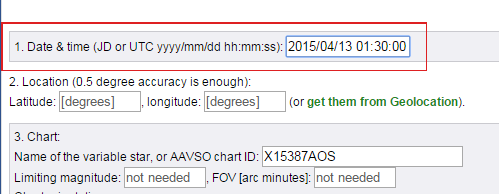
You can also specify the date as Julian Date (JD).
Location
- Set Latitude: 45.705
- Set Longitude: 25.653
Location
For this tutorial, the values entered manually are OK. When processing your own data, you can also use the Geolocation link to automatically fill in these fields with your current location:
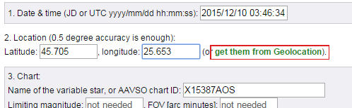Chart
Fill in the following fields in order to generate a star chart:- Name of the variable star: Nova Sgr 2015 No. 2
- Limiting magnitude: 7
- FOV [arc minutes]: 1200
- Click the 'Update Chart' button
Chart
Alternatively, you can use an AAVSO chart ID instead of the star name; in that case, the limiting magnitude and the FOV are the same as the one used to generate the AAVSO chart.
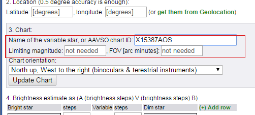Chart
The chart orientation can be changed at any time, without having to click 'Update Chart', and without having to retrieve the data again.
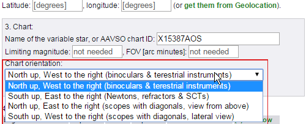
Brightness estimate
Here you have to specify the brightness estimate of the variable star, by bracketig it between two comparison stars.Bright star: select the star labeled 57, in the NE part of the map, above the 'teapot handle'.
First, click on the star selection field in the Bright star column: 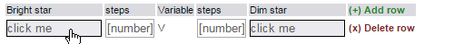 Then click the required star: 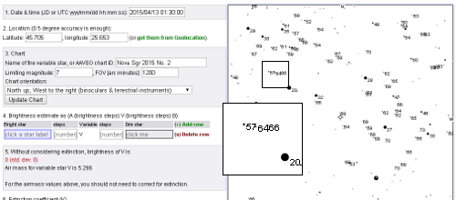Brightness estimate
The selected star is now used in the active star selection field:
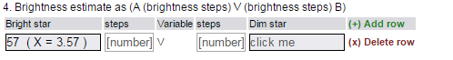Brightness estimate
- specify 2 as number of steps between the bright star and the variable 'V'
- specify 3 as number of steps between the variable 'V' and the dim star
Brightness estimate
Dim star: select the star labeled 63, from the small triangle asterism towards the center of the map, just South of Kaus Borealis.
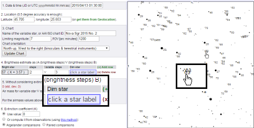 This would correspond to an estimation marked as A 2 V 3 B, where A is the 57 and B is the 63 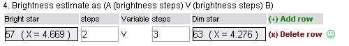Brightness estimate
At this stage, the brightness estimate is 5.9; the application will advise to apply extinction corrections, since the differences in airmass between the variable and comparison stars are too big
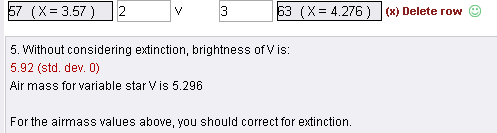You can add more estimations to the table, and the final number will be the average; the application also computes a standard deviation, and you can use that to judge if the newly added estimation is actually improving things (standard deviation decreases) or making them worse (standard deviation increases)
Extinction coefficient (K)
- click the Or compute it from observations radio button
- click the Argelander comparisons radio button (it should be already checked by default when starting the application).
When using Argelander comparisons, we need to provide at least two comparisons, so the table already has two rows
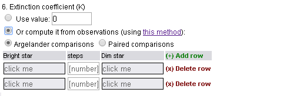Extinction coefficient (K)
For the first comparison, select the 47 as bright star (in the Western part of the map, on the Northern part of the spout of the teapot asterism), specify 2 as brightness steps to the dim starand then select 46 as dim star, from the same region. 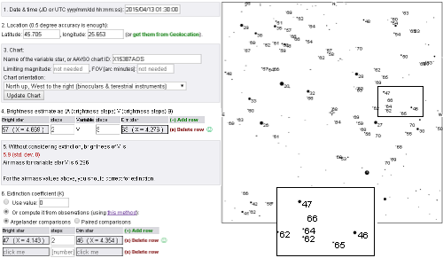Extinction coefficient (K)
For the second comparison, select 57 as bright star (from the North-East side of the map, above the 'teapot handle'), specify 1 as brightness steps to the dim starand then select the 59 as dim star (just above the '57') 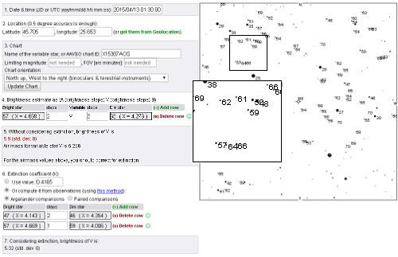Extinction coefficient (K)
With the corrections required to compensate differential extinction, the brightness estimate of the variable is now listed as 5.57
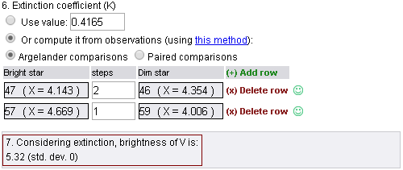